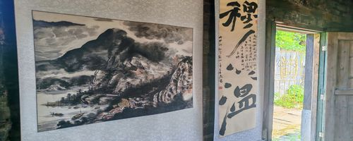
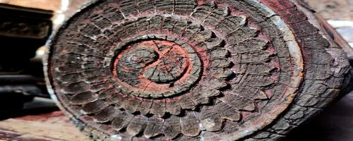
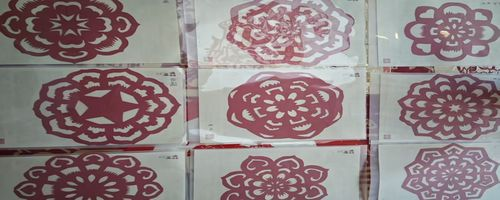
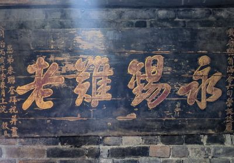
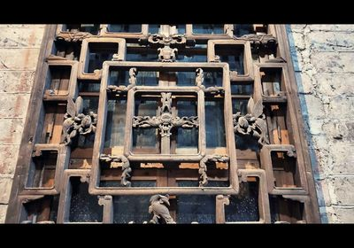
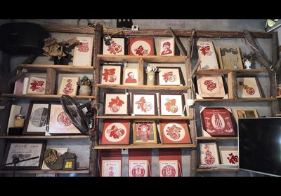

探寻坳上古村的非物质文化遗产

坳上古村书法传承源远流长，村中有多位书法名家。书法作品或苍劲有力或飘逸灵动，将诗词歌赋与笔墨丹青完美结合，展现了深厚的文化底蕴。

古村建筑中的木雕装饰精美绝伦，门楣、窗棂、梁柱上的木雕图案栩栩如生，融合了吉祥寓意与民间传说，是湘南传统木雕工艺的珍贵遗存。

坳上剪纸起源于清代，以其精细的刀法和独特的图案设计闻名。传承人将民间故事、吉祥寓意融入剪纸作品，题材丰富，技艺精湛，是湘南地区剪纸艺术的杰出代表。

历代名家题字，见证百年历史

精湛木雕工艺，古色古香

剪纸作品琳琅满目